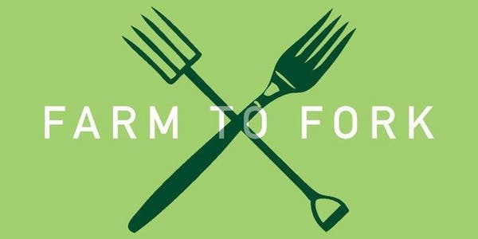

about us
Our Mission Statment

At Farm to Fork we strive to provide a "A Sustainable, Fine Dining Experience" to every patron who walks through our doors. We incorporate multiple methods to sustainabily source the nutrious meals we serve. This includes parterning with local farmers and community gardens, and growing our own seasonal vegitables. We believe in the importance of supporting local food production to reduce global emmisions.
More about the Movement

Farm-to-table (or farm-to-fork) is a social movement which promotes serving local food through direct acquisition from the producers. This can be accomplished through a direct sales relationship, a community-supported agriculture arrangement, a farmer's market, a local distributor or by the restaurant raising its own food. Farm-to-table often incorporates a form of food traceability where the origin of the food is identified to consumers.
The farm-to-table movement has arisen with changes in attitudes about food safety, food freshness, food seasonality, and small-farm economics. Advocates and practitioners of the farm-to-table model frequently cite the scarcity of fresh, local ingredients; the poor flavor of ingredients shipped from afar; the poor nutritional integrity of shipped ingredients; the disappearance of small family farms; the disappearance of heirloom and open-pollinated fruits and vegetables; and the dangers of a highly centralized food growing and distribution system as motivators for their decision to adopted a more locavore approach to the food system.